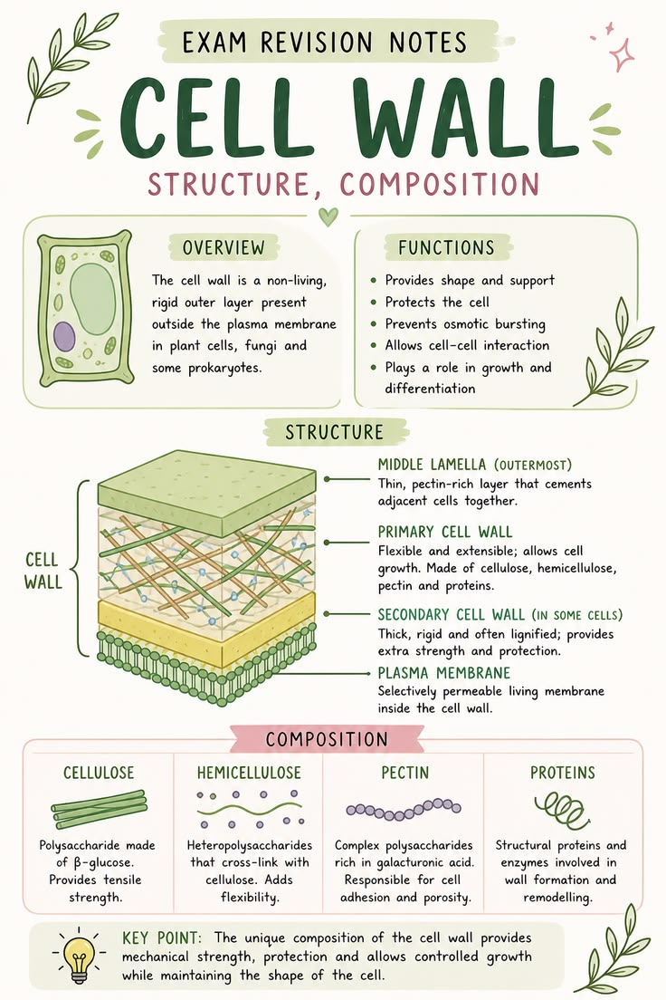

🧱 Cell Wall
The rigid outer covering that provides protection, support and shape to plant cells.
Introduction
The cell wall is a strong, rigid and non-living outer covering present outside the plasma membrane of plant cells. It protects the cell, provides support and gives a definite shape to the plant cell. Animal cells do not have a cell wall, which makes them more flexible.
The plant cell wall is mainly made up of cellulose, a complex carbohydrate that gives strength and rigidity to the cell. Besides cellulose, small amounts of hemicellulose and pectin are also present.
Since the cell wall is freely permeable, it allows water, gases and dissolved substances to move in and out of the cell without much restriction. However, the actual regulation of materials entering and leaving the cell is carried out by the plasma membrane located just inside the cell wall.
The cell wall helps plants remain upright by providing mechanical strength. It also prevents the cell from bursting when excess water enters by osmosis.
Functions of the Cell Wall
- Provides a definite shape to the cell.
- Protects the cell from mechanical injury.
- Gives strength and support to the plant.
- Prevents the cell from bursting due to excessive water intake.
- Allows free movement of water and gases.
📌 Key Points
- The cell wall is present only in plant cells.
- It is a non-living, rigid outer covering.
- It is mainly composed of cellulose.
- It provides protection, support and shape to the cell.
- The cell wall is freely permeable.
📝 Remember
Cell Wall = Non-living + Cellulose + Freely Permeable
Plasma Membrane = Living + Selectively Permeable
🎯 JKBOSE Exam Point
Frequently asked examination questions include:
- What is the cell wall?
- Name the main component of the cell wall.
- State any four functions of the cell wall.
- Why is the cell wall called freely permeable?
- Differentiate between the cell wall and the plasma membrane.

Figure 1.4 — Structure of a plant cell showing the cell wall.
❓ Practice Questions
- Define the cell wall.
- Which substance forms the cell wall?
- Why is the cell wall important for plants?
- Why do animal cells not have a cell wall?
- Differentiate between the cell wall and plasma membrane.